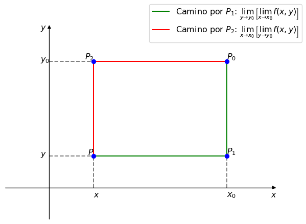
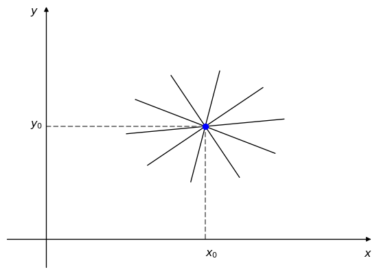
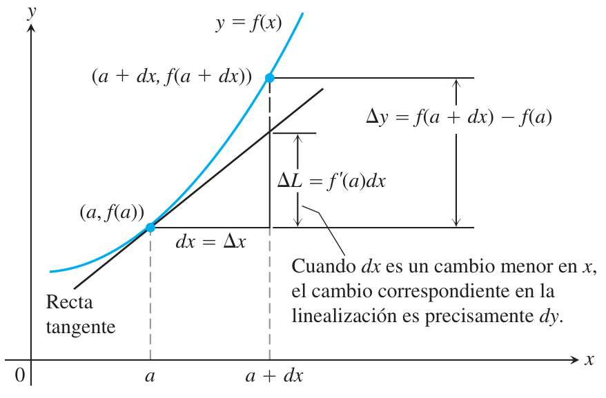

En \mathbb{R}^{2} el entorno de puntoP_{0}(x_{0},y_{0}) y de radio \delta es el conjunto de puntos ubicados en el interior de un círculo de centro P_{0} y radio \delta. En clase, al entorno lo vimo como Bola, así que vamos a usar la B para representarlo.
Punto
Consideramos como punto a cualquier vector del plano o el espacio que tenga origen en el \vec{O}.
Bola abierta
Es el conjunto de puntos ubicados en un círculo de radio \delta alrededor de un punto P_{0}.
B(P_{0},\delta)=\left\{(x,y) \;/\; 0\leq \sqrt[]{(x-x_{0})^2-(y-y_{0})^2}<\delta,\delta \in \mathbb{R}^{}\right\}
Otra notación mas facil de entender es la siguiente:
B(P_{0},\delta)=\left|P-P_{0}\right|<\delta,\delta \in \mathbb{R}^{}
Que podemos interpretar como: la bola abierta B(P_{0},\delta) es el conjunto de todos los puntos P cuya distancia a P_{0} es menor a \delta, siendo \delta el radio de un círculo alrededor del punto P_{0}.
Bola abierta reducida
Es lo mismo que la bola abierta, solo que ahora el punto P_{0} no está incluído en el conjunto de puntos.
La denotamos como B_{0} y su ecuación es la siguiente:
B_{0}(P_{0},\delta)=0<\left|P-P_{0}\right|<\delta,\delta \in \mathbb{R}^{}
Bola cerrada
Es el conjunto de puntos alrededor del punto P_{0} que cumplen que su distancia es \leq \delta. La denotamos como \overline{B}.
\overline{B}(P_{0},\delta)=\left|P-P_{0}\right|\leq \delta,\delta \in \mathbb{R}^{}
Tipos de puntos
Dados un punto P cualquiera y un conjunto no vacío A de números definimos:
Punto interior
Un punto P_{0} es interior de un conjunto A si existe una bola abierta alrededor de P_{0} que esté totalmente contenida en A.
P_{0} \text{ es punto interior} \iff \exists B(P_{0}) \subset A
Punto de acumulación
Cuando toda bola abierta reducida alrededor de un punto P_{0} contiene puntos de A.
P_{0} \text{ es punto de acumulación de } A \iff \forall B_{0}(P_{0},\delta): \exists P \;/\; P \in B_{0}(P_{0},\delta) \land P \in A
Punto aislado
Cuando existe una bola abierta alrededor del punto P_{0} cuya intersección con A es el mismo punto.
P_{0}\text{ es un punto aislado } \iff \exists B(P_{0}) \;/\; B(P_{0}) \cap A=P_{0}
Nota: Fijarse que P_{0} \in A. si bien es un punto que está separado del resto de los puntos de A, sigue formando parte de ese conjunto.
Punto exterior
Este es lo mismo que el anterior, pero ahora P_{0} \notin A.
P_{0}\text{ es punto exterior } \iff \exists B(P_{0}) \;/\; B(P_{0}) \cap A= \left\{\varnothing\right\}
Punto frontera
Si hay una bola alrededor de un punto P_{0} que contiene tanto puntos que pertenecen a A, como puntos que no pertenecen a A.
P_{0}\text{ es punto frontera } \iff \forall B(P_{0})=\begin{cases}
\exists P_{1} \in B(P_{0}) \land P_{1} \in A \\
\exists P_{2} \in B(P_{0}) \land P_{2} \notin A
\end{cases}
Frontera de un conjunto
Es el conjunto de todos los puntos frontera de un conjunto A.
Conjuntos
Conjunto abierto
Es un conjunto cuyos puntos son todos interiores. No hay puntos frontera.
Conjunto cerrado
Es un conjunto que contiene todos sus puntos de acumulación, es decir, contiene sus puntos interiores y contiene sus puntos frontera.
Conjunto acotado
Es un conjunto para el cual es posible hallar un valor M que es mayor que el módulo de cualquier punto P_{0} de A.
M \in \mathbb{R}^{+} \;/\; \left|P_{0}\right|<M,\forall P_{0} \in A
Tambien lo podemos escribir de la siguiente forma
\forall P_{0} \in A: \exists M \in \mathbb{R}^{+} \;/\; \left|P_{0}\right|<M
Complemento de un conjunto
El complemento de un conjunto A es el conjunto que contiene todos los elementos del conjunto universal de A que no pertenecen a A.
Conjunto conexo
Un conjunto es conexo si cualquier par de puntos del conjunto puede ser unido por un camino formado por sementos de recta contenidos en A.
Conjunto simplemente conexo
Es cuando cualquier curva cerrada contenida en el conjunto tiene su interior totalmente contenido en el conjunto.
Funciones
Existen varios tipos de funciones. Nosotros hasta ahora veníamos trabajando con funciones de una sola variable. Estas funciones se llaman funciones escalares, ya que son de la forma f:\mathbb{R}^{} \to \mathbb{R}^{}.
Pero existen otros tres tipos de funciones:
Funciones de varias variables que devuelven un escalar: Se llaman campos escalares y son de la forma f:\mathbb{R}^{n} \to \mathbb{R}^{}. La palabra campo se usa porque ahora estamos hablando de regiones del espacio: el argumento de la función ya no es un escalar, sino que es un vector de dimensión n, y ese vector pertenece al campo, o el espacio, \mathbb{R}^{n}.
Una función de este estilo se vería como f(x_{1},x_{2},\dots ,x_{n})=y, con y \in \mathbb{R}^{}.
Funciones de una sola variable que devuleven vectores: Se llaman funciones vectoriales y son de la forma f:\mathbb{R}^{} \to \mathbb{R}^{m}.
Un ejemplo de una función vectorial sería f(x)=(y_{1}, y_{2}, \dots , y_{n}), con x \in \mathbb{R}^{}
Funciones de varias variables que devuelven vectores: Se llaman campos vectoriales y son de la forma f:\mathbb{R}^{n} \to \mathbb{R}^{m}.
Un campo vectorial se escribe así f(x_{1}, x_{2}, \dots , x_{n})=(y_{1},y_{2},\dots ,y_{n}).
Otra forma que se suele usar bastante, especialmente cuando empecemos a usar matrices es la forma f(x_{1}, x_{2}, \dots , x_{n}) = (f_{1}(x_{1}, x_{2}, \dots , x_{n}), f_{2}(x_{1}, x_{2}, \dots , x_{n}), \dots ,f_{m}(x_{1}, x_{2}, \dots , x_{n})). Esta forma es literalmente lo mismo que la anterior solo que está escrito distinto, pero en realidad y_{1} = f_{1}(x_{1}, x_{2}, \dots , x_{n}), lo mismo para y_{2} y lo mismo para todos los y que hayan del lado izquierdo.
Funciones implícitas y explícitas
Esto también ya lo vimos en análisis pero está bueno recordarlo. Las funciones con las que vamos a trabajar, vamos a ver que pueden estar representadas de dos maneras distintas.
Función explícita
Una función se dice que está dada en su forma explícita cuando la variable dependiente está despejada, y la función está expresada directamente en términos de la/s variables independientes.
Por ejemplo, supongamos que tenemos una función escalar f:\mathbb{R}^{} \to \mathbb{R}^{}. La función está dada en su forma explícita si está escrita de la forma f(x)=y.
Otro ejemplo podría ser si tenemos el campo escalar g:\mathbb{R}^{5} \to \mathbb{R}^{}. Si g está escrita como g(x_{1}, x_{2}, x_{3}, x_{4}, x_{5})=y, entonces está dada en su forma explícita.
Función implícita
Una función se dice que está dada de forma implícita cuando la variable dependiente no está despejada.
Por ejemplo, supongamos que tenemos una función f:\mathbb{R}^{2} \to \mathbb{R}^{} \;/\; f = x^2 + 2y - 3z. Esta función está dada en su forma implícita, ya que la variable z, que es la variable dependiente no está despejada en la ecuación de la función.
Las funciones implícitas las vamos a usar un montón, Y ENTRA SÍ O SÍ EN EL PARCIAL.
Hay veces, como en el ejemplo anterior, que es fácil hacer el pasaje de una función dada en su forma implícita a su forma explícita. Lo único que hay que hacer es despejar z y listo. En el ejemplo anterior, la función f escrita en su forma explícita sería f(x,y)=\frac{x^2+2y}{3}. Pero hay muchas otras veces, y va a pasar en el parcial que nos dan una función implícita y es literalmente imposible despejar la variable dependiente. En ese caso hay que trabajar con la función implícita nomas, pero ya lo vamos a ver cuando lleguemos. Por ahora solo hay que saber que existen.
Líneas o Curvas de Nivel
Una curva de nivel para una función z=f(x,y) es el conjunto de todos los puntos (x,y) en los que la función toma el mismo valor f(x,y)=k, con k \in \mathbb{R}^{}.
Una función z=f(x,y) es un campo escalar f:\mathbb{R}^{2} \to R que describe una superficie. Por ejemplo, la función z=f(x,y)=x^2+y^2 es la ecuación de un paraboloide circular que tiene su vertice en el origen de coordenadas. Si nosotros decimos ahora que z=4 (por tirar un número), la función queda como x^2+y^2=4, y eso es la ecuación de una circunferencia de radio 2. Entonces, el conjunto de todos los puntos que forman una circunferencia de radio 2, con centro en el origen, es la curva de nivel de f(x,y)=4.
Podemos pensar la curva de nivel como la proyección de la superficie en f(x,y)=k sobre el plano xy.
Código
import numpy as npimport plotly.graph_objects as go# Superficie: z = f(x,y)x = np.linspace(-2, 2, 20)y = np.linspace(-2, 2, 20)x, y = np.meshgrid(x, y)z = x**2+ y**2# Curva de nivel f(x,y)=4theta = np.linspace(0, 2* np.pi, 200)x_curva =2* np.cos(theta)y_curva =2* np.sin(theta)z_curva = np.full_like(theta, 4)z_proy = np.full_like(theta, 0) # para la proyección sobre el plano xyfig = go.Figure()# Grafico la superficiefig.add_trace(go.Surface(x=x, y=y, z=z, colorscale="Viridis", opacity=0.5, showscale=False))# Grafico la curva de nivel sobre la superficiefig.add_trace(go.Scatter3d( x=x_curva, y=y_curva, z=z_curva, mode="lines", line=dict(color="blue", width=4), name="Curva de nivel"))# Grafico la proyección de la curva de nivel sobre el plano xyfig.add_trace(go.Scatter3d( x=x_curva, y=y_curva, z=z_proy, mode="lines", line=dict(color="black", width=4), name="Proyección de la curva de nivel"))# Ajusto la imagen del gráficofig.update_layout( scene=dict(aspectmode="cube"))
Así como hay curvas de nivel, existen las superficies de nivel.
Superficies de nivel
En el caso de funciones de 3 variables independientes, osea campos escalares que van de f:\mathbb{R}^{3} \to \mathbb{R}^{}, podemos definir superficies de nivel.
Para una función w=f(x,y,z), una superficie de nivel es el conjunto de todos los puntos (x,y,z) en los que la función toma el mismo valor f(x,y,z)=k, con k \in \mathbb{R}^{}.
En este caso no podemos hacer un gráfico como el anterior ya que al tener una función de 3 variables, necesitamos 4 dimensiones para graficarla. Lo que sí podemos hacer es graficar la superficie de nivel.
Incrementos de una función
Cuando hablamos de incrementos de una función, hacemos referencia a cómo varía la función al desplazarnos en las distintas direcciones.
Figura 1: Incrementos de una función (adaptado de Monllor (2015, 14))
En la Figura 1 podemos ver que la curva MN, que es la intersección de la superficie z=f(x,y) y el plano y=cte, vemos que si nos movemos sobre ella, z varía solo en función de x.
Si nos movemos en el eje x una distancia \Delta x, la variación de z es lo que se conoce como incremento parcial de z respecto de x y lo denotamos como \Delta_{x} z (es el segmento \overline{NN_{1}} de la Figura 1).
\Delta_{x} z = f(x + \Delta x, y) - f(x,y)
Si en cambio, consideramos a x=cte y nos vamos moviendo sobre el eje y, la variación de z es el incremento parcial de z respecto de y y lo denotamos como \Delta_{y} z (es el segmento \overline{TT_{1}})
\Delta_{x} z = f(x, y + \Delta y) - f(x,y)
Por último, si incrementamos simultaneamente a x en \Delta x y a y en \Delta y, obtenemos el incremento total de la función, lo denotamos como \Delta z (segmento \overline{QQ_{1}})
\Delta z = f(x + \Delta x, y + \Delta y) - f(x,y)
Límites
Ahora ya sabemos todo lo que hay que saber para poder empezar a estudiar las funciones de análisis 2.
Definición
Dada una función z=f(x,y), se define el límite de esa función cuadno P(x,y) tiende a P_{0}(x_{0},y_{0}) de la siguiente manera:
El límite de f(x,y) es igual a L si, para cualquier número \varepsilon>0 existe un número \delta>0 tal que, si la distancia del punto P(x,y) a P_{0}(x_{0},y_{0}) es menor a \delta, entonces la distancia entre f(x,y) y L es menor a \varepsilon, con P(x,y)\neq P_{0}(x_{0},y_{0})
\lim_{(x,y) \to (x_{0},y_{0})}f(x,y)=L \iff \forall \varepsilon>0: \exists \delta>0 \;/\; 0<\lVert(x,y)-(x_{0},y_{0})\rVert<\delta \implies \left|f(x,y)-L\right|<\varepsilon
Volvamos un toque a análisis I. Cuando estudiabamos límites y queríamos saber si existía o no el límite de la función y=f(x) cuando x tiende a x_{0}, lo que hacíamos era calcular el límite por los dos únicos caminos que habían para llegar a ese punto x_{0}: por la izquierda y por la derecha. Si el límite por izquierda era igual al límite por derecha, entonces podíamos decir que el límite de la función existía en ese punto.
Para las funciones de dos variables podemos decir lo mismo. Si queremos calcular el límite de z=f(x,y) cuando un punto P(x,y) tiende a P_{0}(x_{0},y_{0}), y podemos demostrar que el límite acercándonos por cualquier camino a P_{0} es L, entonces podemos decir que ese límite existe. El problema está en que, como ahora tenemos dos variables, los caminos por los que nos podemos acercar a P_{0} son infinitos, y es imposible calcular el límite de todos esos caminos para ver si nos dan igual.
Una opción sería calcular el límite por definición, pero eso es muy complicado así que lo descartamos.
Lo primero que conviene hacer siempre que nos den un límite es fijarnos si al reemplazar (x,y) por (x_{0},y_{0}) podemos llegar a un resultado (igual que como hacíamos en análisis I). Si al reemplazar obtenemos un número, quiere decir que el límite existe y es ese número. Si llegamos a una indeterminación vamos a tener que arreglarnosla.
Ejemplos
Calcular el límite cuando (x,y) tiene a (3,1) de la función f(x,y)=xy-y^2
Reemplazamos (x,y) en f(x,y) y resolvemos
\lim_{(x,y) \to (3,1)}\left(xy-y^2\right)=3\cdot 1 - 1^2 = 2
El límite existe y es L=2.
Calcular el límite cuando (x,y) \to (0,0) de f(x,y)=\frac{\sin^{}(3xy)}{x}
Primero reemplazamos y vemos si obtenemos un número
\lim_{(x,y) \to (0,0)}\frac{\sin^{}(3xy)}{x}=\frac{3\cdot 0\cdot 0}{0}=\frac{0}{0}
Como llegamos a una indeterminación, primero nos fijamos si la podemos salvar. La lógica es la misma que cuando trabajabamos con funciones escalares.
\lim_{(x,y) \to (0,0)}\frac{\sin^{}(3xy)}{x}=\lim_{(x,y) \to (0,0)}\frac{3y\sin^{}(3xy)}{3xy}=\left(\lim_{(x,y) \to (0,0)}3y\right)\cdot \left(\lim_{(x,y) \to (0,0)}\frac{\sin^{}(3xy)}{3xy}\right)=0\cdot 1=0
Como pudimos salvar la indeterminación, el límite existe y es igual a L=0.
Si resulta que cuando reemplazamos (x,y) llegamos a una indeterminación que no se puede salvar, la única opción que nos queda para saber si existe el límite es calcularlo por definición. Pero como dijimos, eso es muy complicado así que lo descartamos.
No vamos a poder saber si existe el límite en estos casos, pero lo que sí podemos demostrar es que no existe. Si somos capaces de demostrar que acercándonos por dos caminos distintos al punto P_{0}, el límite no es igual, entonces queda demostrado que el límite en ese punto no existe. Vamos a ver dos formas de hacer esto: usando límites iterados y límites radiales.
OJO IGUAL, si no podemos encontrar esos dos caminos que nos den distintos límites, no quiere decir que el límite existe ya que hay infinitos caminos y no podemos estar 100% seguros de que uno no va a dar distinto.
Límites iterados
Podemos calcular los límites de una función siguiendo trayectorias particulares, denominadas Trayectorias escalonadas. Estas trayectorias están constituidas por rectas paralelas a los ejes cartesianos y el método consiste en calcular los límites en un punto P_{0}, partiendo de P y pasando una vez por P_{1}; después hacemos lo mismo, pero esta vez pasando por P_{2}. De esta manera, podemos comparar los resultados y fijarnos: si los dos límites nos dieron distinto, quiere decir que el límite de esa fnción en el punto P_{0} no existe.
OJO! Si nos dan igual ya dijimos que no quiere decir que existe el límite. Simplemente significa que esas trayectorias nos dan el mismo resultado, pero existen infinitas mas que pueden dar distinto.
Código
import matplotlib.pyplot as pltfrom mpl_toolkits.axisartist.axislines import AxesZero# Esto me lo copié de https://matplotlib.org/stable/gallery/axisartist/demo_axisline_style.html#sphx-glr-gallery-axisartist-demo-axisline-style-pyfig = plt.figure()ax = fig.add_subplot(axes_class=AxesZero)for direction in ["xzero", "yzero"]:# adds arrows at the ends of each axis ax.axis[direction].set_axisline_style("-|>")# adds X and Y-axis from the origin ax.axis[direction].set_visible(True)for direction in ["left", "right", "bottom", "top"]:# hides borders ax.axis[direction].set_visible(False)# Agrego lineaslabel_p1 ="Camino por $P_{1}$: $\\lim_{y \\to y_{0}}\\left[\\lim_{x \\to x_{0}}f(x,y)\\right]$"label_p2 ="Camino por $P_{2}$: $\\lim_{x \\to x_{0}}\\left[\\lim_{y \\to y_{0}}f(x,y)\\right]$"camino_p1, = ax.plot([1, 4, 4], [1, 1, 4], color="green", label=label_p1)camino_p2, = ax.plot([1, 1, 4], [1, 4, 4], color="red", label=label_p2)ax.plot([1, 1], [0, 1], linestyle="--", color="gray")ax.plot([4, 4], [0, 1], linestyle="--", color="gray")ax.plot([0, 1], [1, 1], linestyle="--", color="gray")ax.plot([0, 1], [4, 4], linestyle="--", color="gray")# Agrego los puntosax.plot(1, 1, "o", color="blue")ax.plot(4, 1, "o", color="blue")ax.plot(1, 4, "o", color="blue")ax.plot(4, 4, "o", color="blue")# Agrego las etiquetas de los puntosax.text(1, 1, "$P$" , fontsize=12, ha="right", va="bottom")ax.text(4, 1, "$P_{1}$", fontsize=12, ha="left", va="bottom")ax.text(1, 4, "$P_{2}$", fontsize=12, ha="right", va="bottom")ax.text(4, 4, "$P_{0}$", fontsize=12, ha="left", va="bottom")# Límites de los ejesax.set_xlim(-1, 5)ax.set_ylim(-1, 5)# Labels de los ejesax.set_xticks([])ax.set_yticks([])ax.text(-0.2, 5, "$y$", fontsize=12)ax.text(-0.2, 1, "$y$", fontsize=12)ax.text(-0.2, 4, "$y_{0}$", fontsize=12)ax.text(5, -0.3, "$x$", fontsize=12)ax.text(1, -0.3, "$x$", fontsize=12)ax.text(4, -0.3, "$x_{0}$", fontsize=12)# Agrego leyendasfig.legend(loc="upper right", fontsize=12)# Mostrar el gráficoplt.show()
Figura 2: Límites iterados (adapatado de Monllor (2015, 17))

Ejemplo
Dada z=\frac{2x^2+y^3}{3x^2 - y^3}, calcular el límite en el punto P_{0}(0,0):
\lim_{(x,y) \to (0,0)}\frac{2x^2 + y^3}{3x^2 - y^3}
Lo primero que hacemos es reemplazar (x,y) por (0,0) en la función. En este caso vamos a llegar a una indeterminación que no podemos salvar, así que podemos calcular los límites iterados para fijarnos si las dos trayectorias nos dan distintos valores de límites.
\begin{aligned}
\lim_{y \to 0}\left[\lim_{x \to 0}\frac{2x^2 + y^3}{3x^2 - y^3}\right] &= \lim_{y \to 0}\left[\frac{0+y^3}{0-y^3}\right] = \lim_{y \to 0} (-1) = -1\\
\lim_{x \to 0}\left[\lim_{y \to 0}\frac{2x^2 + y^3}{3x^2 - y^3}\right] &= \lim_{x \to 0}\left[\frac{2x^2 + 0}{3x^2 - 0}\right] = \lim_{x \to 0}\left(\frac{2}{3}\right) = \frac{2}{3}
\end{aligned}
Vemos que las dos trayectorias nos dieron distintos resultados, así que podemos afirmar que el límite de f(x,y) en el punto P_{0}(0,0) no existe.
Límites radiales
Otra estrategia que podemos tomar es calcular los límites radiales. Esta estrategia consiste en calcular el límite siguiendo las trayectorias del haz de rectas que pasan por el punto P_{0}(x_{0},y_{0}). De esta manera, todas las rectas que pasan por el punto P_{0} las podemos escribir de la forma r:(y-y_{0}) = m(x-x_{0}).
Código
# Esto me lo copié de https://matplotlib.org/stable/gallery/axisartist/demo_axisline_style.html#sphx-glr-gallery-axisartist-demo-axisline-style-pyfig = plt.figure()ax = fig.add_subplot(axes_class=AxesZero)for direction in ["xzero", "yzero"]:# adds arrows at the ends of each axis ax.axis[direction].set_axisline_style("-|>")# adds X and Y-axis from the origin ax.axis[direction].set_visible(True)for direction in ["left", "right", "bottom", "top"]:# hides borders ax.axis[direction].set_visible(False)# Dibujo las rectas que pasan por el punto P0x0, y0 =2, 2for angulo in np.linspace(0, 2*np.pi, 10, endpoint=False) + np.pi/24: x_end = x0 + np.cos(angulo) y_end = y0 + np.sin(angulo) ax.plot([x_end, x0], [y_end, y0], color="black", linewidth=1)# Dibujo las lineas punteadasax.plot([2, 2], [0, 2], linestyle="--", color="gray")ax.plot([0, 2], [2, 2], linestyle="--", color="gray")# Dibujo el punto P0ax.plot(x0, y0, "o", color="blue")# Límites de los ejesax.set_xlim(-0.5, 4)ax.set_ylim(-0.5, 4)# Labels de los ejesax.set_xticks([])ax.set_yticks([])ax.text(-0.2, 4, "$y$", fontsize=12)ax.text(-0.2, 2, "$y_{0}$", fontsize=12)ax.text(4, -0.3, "$x$", fontsize=12)ax.text(2, -0.3, "$x_{0}$", fontsize=12)plt.show()
Figura 3: Límites radiales (adaptado de Monllor (2015, 18))

Con este método, si L queda en función de m significa que va a tener un límite distinto para cada trayectoria, osea que no existe el límite en ese punto.
Ejemplo
Dada z=\frac{2xy}{3x^2-y^2}, calcular el límite de z en el punto P_{0}(0,0).
\lim_{(x,y) \to (0,0)}\frac{2xy}{3x^2 - y^2}
De nuevo, lo primero que hacemos es reemplazar (x,y) en la función por (0,0). En este caso nos queda una indeterminación así que vamos a calcular los límites radiales para intentar demostrar que no existe el límite.
La idea de usar los límites radiales es que podemos expresar las infinitas rectas con dirección radial que pasan por el punto P_{0} de la forma r:y-y_{0}=m(x-x_{0}). En este caso, nuestro punto es P_{0}(0,0) así que la ecuación de r es y-0=m(x-0), que es lo mismo que y=mx.
Y ahora, tenemos una expresión de y en función de x, así que podemos reemplazar y en la función del límite y escribirlo de la siguiente forma.
\lim_{(x,y) \to (0,0)}\frac{2xy}{3x^2 - y^2} = \lim_{x \to 0}\frac{2x(mx)}{3x^2-(mx)^2}
Nos quedó un límite que depende solo de x
\lim_{x \to 0}\frac{2xmx}{3x^2-(mx)^2}=\lim_{x \to 0}\frac{2x^2m}{x^2(3-m^2)}=\frac{2m}{3-m^2}
El resultado de límite nos quedó en función de m, así que podemos afirmar que no existe el límite para esa función en el punto P_{0}(0,0)
Veamos un último ejemplo
Ejemplo
Dada z=\frac{2x^2y}{x^4+3y^2}, calcular el límite de la función en el punto P_{0}(0,0)
\lim_{(x,y) \to (0,0)}\frac{2x^2y}{x^4+3y^2}
Si reemplazamos vamos a tener una indeterminación, así que veamos qué pasa si calculamos los límites iterados
\begin{aligned}
\lim_{y \to 0}\left[\lim_{x \to 0}\frac{2x^2y}{x^4+3y^2}\right] &= 0\\
\lim_{x \to 0}\left[\lim_{y \to 0}\frac{2x^2y}{x^4+3y^2}\right] &= 0
\end{aligned}
Los dos límites nos dieron igual, así que el método no nos sirve para demostrar que el límite no existe.
Recordemos que esto no quiere decir que existe el límite y que es L=0, porque hay infinitos caminos para llegar a P_{0} y alguno puede dar distinto.
Calculemos los límites radiales entonces.
Como el punto es el (0,0), la ecuación de r es y=mx, así que reemplazamos y en la ecuación.
\lim_{x \to 0}\frac{2x^2(mx)}{x^4+(mx)^2} = \lim_{x \to 0}\frac{x^2(2mx)}{x^2(x^2+3m^2} = \lim_{x \to 0}\frac{2mx}{x^2+3m^2}=0
Este límite también nos volvió a dar cero, pero de vuelta, esto no significa que el límite de la función es L=0. Simplemente este método no sirve para demostrar la no existencia del límite. Si llegamos a este punto en realidad no hay mucho que podamos hacer ya que las posibilidades son infinitas, pero a modo de demostración, vamos a ver que si nos acercamos al punto P_{0} con una parábola, el límite nos va a dar distinto así que vamos a poder afirmar que el límite no existe. Porque todas las trayectorias deben dar el mismo valor del límite, con que exista una (en este caso la parábola) que nos de distinto, ya es suficiente para afirmar la no existencia.
Para acercarnos a P_{0} por una parábola decimos que y=x^2, y reemplazamos en la ecuación del límite.
\lim_{x \to 0}\frac{2x^2(x^2)}{x^4+(x^2)^2} = \lim_{x \to 0}\frac{2x^4}{x^4+3x^4} = \frac{2}{4} = \frac{1}{2}
Ahora podemos ver que el límite nos dió distinto en una de las trayectorias, así que dicho límite no existe.
Continuidad
Es lo mismo que en análisis I.
Definición
Sea la función z=f(x,y) y P_{0}(x_{0},y_{0}), se dice que z es continua en P_{0} si:
\lim_{(x,y) \to (x_{0},y_{0})}f(x,y)=f(x_{0},y_{0})
Para que se cumpla esto se tienen que cumplir tres condiciones básicas:
Que el límite exista para P(x,y) \to P_{0}(x_{0},y_{0})
Que la función esté definida en P_{0}(x_{0},y_{0})
Que el límite de la función sea igual al valor de la función en P_{0}(x_{0},y_{0})
Si la igualdad no se cumple en P_{0} quiere decir que este es un punto de discontinuidad.
Si no existe el límite en ese punto, la discontinuidad es esencial.
Si existe el límite, pero la función no es continua, la discontinuidad es evitable. Lo que se hace es redefinir la función para que sea continua.
Derivadas parciales
Dada una función z=f(x,y) de dos variables independientes que describe a una superficie S, y dado un plano vertical \pi:y=y_{0}, la intersección de la superficie S con el plano \pi describe una curva que tiene la forma de z=f(x,y_{0}) (Figura 4) Si nos movemos a través del plano \pi, la variable y se mantiene constante por lo que podemos considerar que la única variable de la función es x. Entonces, ahora podemos derivar la función como si fuese una función de una única variable x. Estaríamos entonces calculando la derivada parcial de \mathbf{f(x,y)} con respecto a \mathbf{x}, que se expresa así:
\frac{\partial f(x,y)}{\partial x} = \lim_{\Delta x \to 0}\frac{\Delta xf(x,y)}{\Delta x} = \lim_{\Delta x \to 0}\frac{f(x + \Delta x, y) - f(x,y)}{\Delta x}
Otras formas de escribir la derivada parcial son las siguientes:
\frac{\partial f(x,y)}{\partial x} = \frac{\partial z}{\partial x} = \frac{\partial f}{\partial x} = z^{\prime}_{x} = f_{x}(x,y)
La que mas le gusta a Moni es la ultima f_{x}(x,y).
Lo mismo podemos hacer con la variable y ahora. Mantenemos a x constante y derivamos para obtener la derivada parcial respecto de \mathbf{y}.
\frac{\partial f(x,y)}{\partial y} = \lim_{\Delta y \to 0}\frac{\Delta yf(x,y)}{\Delta y} = \lim_{\Delta y \to 0}\frac{f(x, y + \Delta y) - f(x,y)}{\Delta y}
Para calcular estas derivadas hacemos lo mismo que veníamos siempre, solo que ahora hay que tener en cuenta que si estamos haciendo la derivada parcial respecto de x, la variable y es una constante y la tenemos que tratar como tal.
En los ejemplos que siguen voy a tratar de usar todas las notaciones distintas que existen de las derivadas parciales solo para aclarar que todas significan lo mismo. Siempre está bueno conocer todas las formas que hay de expresarlas porque cada autor usa la que mas le gusta, y mas adelante algunas definiciones usan una expresión u otra, pero todas significan lo mismo.
Ejemplo
Calcular las derivadas parciales de la función z=y^3\cos^{}(x).
Calculemos primero la derivada parcial respecto de x. Tenemos que considerar a y como una constante.
f_{x}(x,y) = -y^3\sin^{}(x)
Ahora calculemos la derivada parcial respecto de y. Consideramos que x es una constante ahora.
\frac{\partial f(x,y)}{\partial y} = 3y^2\cos^{}(x)
Ejemplo
Calcular las derivadas parciales de la función z=3x^2y-y^2 en el punto P(1,2).
Calculemos ahora primero la derivada parcial respecto de y.
\frac{\partial z}{\partial y} = 3x^2 - 2y
Como nos piden calcular la derivada en el punto P(1,2), reemplazamos (x,y) por (1,2) en la ecuación de la derivada
f_{y}(1,2) = 3\cdot 1^2 - 2\cdot 2 = -1
Ahora calculemos la derivada parcial respecto de x.
z_{x} = 6xy
Y nos piden calcularla en el punto P(1,2) así que reemplazamos
\frac{\partial f(1,2)}{\partial x}=6\cdot 1\cdot 2 = 12
Interpretación geométrica de las derivadas parciales
Consideremos a la función z=4-x^2-2y^2 y busquemos sus derivadas parciales en el punto P_{0}(1,1).
\begin{aligned}
\frac{\partial f(x,y)}{\partial x} = -2x && \frac{\partial f(1,1)}{\partial x} = -2\\
\frac{\partial f(x,y)}{\partial y} = -4y && \frac{\partial f(1,1)}{\partial y} = -4
\end{aligned}
Si miramos la Figura 4, podemos ver que cuando hacemos la derivada parcial respecto de x, nos estamos moviendo sobre el plano y=1, y la derivada parcial es la pendiente de la recta tangente a la curva generada por la intersección de la función z con ese plano y=1.
Lo mismo podemos ver cuando hacemos la derivada parcial respecto de y, solo que ahora nos movemos sobre el plano x=1 y la derivada parcial es la pendiente de la recta tangente a la curva generada por la intersección de la función z con ese plano x=1.
Figura 4: Interpretación geométrica de la derivada parcial (adaptado de James (2012, 915))
Derivabilidad de una función
Una función de varias variables es derivable en un punto si es continua en ese punto.
Derivadas parciales sucesivas
Al igual que con las derivadas normales, una derivada parcial la podemos derivar cuantas veces queramos obteniendo derivadas parciales segundas, terceras, etc., con respecto a cada una de las variables consideradas.
Por ejemplo, podemos tener una función z=f(x,y) y su derivada primera respecto de x es \frac{\partial z}{\partial x}. Y a esta función derivada, la podemos volver a derivar respecto de x pero también respecto de y si quisieramos. Si la derivamos respecto de x obtenemos \frac{\partial^2 z}{\partial x^2}, y si la derivamos respecto de y nos queda \frac{\partial^2 z}{\partial y \partial x}. Lo mismo podemos hacer con la derivada parcial respecto de y. Pero todo esto se ve mas claro con un ejemplo.
Ejemplo
Calcular las derivadas de segundo orden de la función z=x^4\sin^{}(5y).
Calculemos primero las derivadas de primer orden
\begin{aligned}
\frac{\partial z}{\partial x} &= 4x^3\sin^{}(5y)\\
\frac{\partial z}{\partial y} &= 5x^4\cos^{}(5y)
\end{aligned}
Ambas derivadas pueden ser derivadas nuevamente para obtener las derivadas parciales de segundo orden:
\begin{aligned}
\frac{\partial^2 z}{\partial x^2} &= \frac{\partial \left[4x^3\sin^{}(5y)\right]}{\partial x} = 12x^2\sin^{}(5y)\\
\frac{\partial^2 z}{\partial y \partial x} &= \frac{\partial \left[4x^3\sin^{}(5y)\right]}{\partial y} = 20x^3\cos^{}(5y)\\
\frac{\partial^2 z}{\partial y^2} &= \frac{\partial \left[5x^4\cos^{}(5y)\right]}{\partial y} = -25x^4\sin^{}(5y)\\
\frac{\partial^2 z}{\partial x \partial y} &= \frac{\partial \left[5x^4\cos^{}(5y)\right]}{\partial x} = 20x^3\cos^{}(5y)\\
\end{aligned}
Podríamos seguir derivando las derivadas de segundo orden para obtener las de tercer orden, y luego podríamos derivar esas de tercer orden y así sucesivamente. Pero por suerte el ejercicio nos pide solo las de segundo orden.
En el ejemplo podemos ver que las derivadas parciales sucesivas no son todas distintas. Las derivadas parciales \frac{\partial^2 z}{\partial x \partial y} y \frac{\partial^2 z}{\partial y \partial x} nos dieron el mismo resultado. Esto no fue ninguna coincidencia, hay un teorema que dice lo siguiente:
“Si las derivadas sucesivas a calcular son continuas, el orden de derivación no altera la derivada, siempre que la cantidad de veces que se derive respecto a cada variable sea la misma.”
En otras palabras, si derivamos primero respecto a x y luego respecto a y (o en el orden inverso), siempre que todas las derivadas sean continuas y hayamos derivado tantas veces respecto a x como respecto a y, el resultado será el mismo.
Expresiones matriciales de las derivadas
Suele ser útil expresar las derivadas de las funciones en su forma matricial. Así, dada una función f:\mathbb{R}^{n} \to \mathbb{R}^{} podemos expresar las derivadas de f con una matriz fila. Esta matriz se denota Df:
Df(x_{1}, \dots , x_{n}) = \begin{bmatrix}
\frac{\partial f}{\partial x_{1}} & \dots & \frac{\partial f}{\partial x_{n}}
\end{bmatrix}
Para el caso general en que f:\mathbb{R}^{n} \to \mathbb{R}^{m}, la matriz derivada va a tener m filas y n columnas, Df \in \mathbb{R}^{m\times n}. Antes de ver esta matriz estaría bueno volver a leer la parte de campos vectoriales en la Sección 3 para entender bien la notación de la matriz que sigue.
Df(\vec{x})=\begin{bmatrix}
\frac{\partial f_{1}}{\partial x_{1}} & \dots & \frac{\partial f_{1}}{\partial x_{n}}\\
\vdots & \ddots & \vdots \\
\frac{\partial f_{m}}{\partial x_{1}} & \dots & \frac{\partial f_{m}}{\partial x_{n}}
\end{bmatrix}
Cuando estemos trabajando con funciones de \mathbb{R}^{2} \to \mathbb{R}^{} (que al final van a ser las funciones con las que mas vamos a trabajar este año), podemos definir una matriz derivada para las segundas derivdas de la función. Esta matriz lleva el nombre de matriz Hessiana, se denota como Hf y va a ser muy útil durante la cursada.
Hf(x,y)=\begin{bmatrix}
f_{xx} & f_{xy} \\
f_{yx} & f_{yy}
\end{bmatrix}
Diferencial
Acá viene un tema importante. Creo que lo mejor para entenderlo bien del todo es volver a análisis I y trabajar con funciones de \mathbb{R}^{} \to \mathbb{R}^{}. Una vez que entendamos bien qué es el diferencial ahí, vamos a pasar a estudiarlo en funciones de \mathbb{R}^{n} \to \mathbb{R}^{m}.
La notación diferencial en realidad la venimos vienod hace un montón pero nunca supimos de dónde venía ni qué significaba. La veíamos por ejemplo cuando estudiabamos derivadas, que podiamos expresarla como \frac{dy}{dx}, donde y=f(x). también la veíamos en las integrales de la forma \int_{}^{} f(x) \,dx. Esto lo tomabamos que solo era una notación, pero en realidad no, dx y dy son dos variables que tiene la propiedad de que cuando su razón existe, esta es igual a la derivada.
Definición
Diferencial en funciones escalares
Sea y=f(x) una función derivable. La diferencial dx es una variable independiente. La diferencial dy es
dy = f^{\prime}(x)dx
Como dx es una variable independiente, nosotros le podemos dar el valor que se nos cante. El valor de dy por otro lado, depende tanto del valor que le demos a la variable dx como del valor que le demos a la variable x.
Sé que esto no nos dijo nada todavía, pero sigamos estudiandolo para tratar de entender el diferencial.
Interpretación geométrica del diferencial
En la siguiente figura podemos ver gráficamente a qué llamamos dx y dy.
Figura 5: Imagen sacada de George B. Thomas (2010, 42). Interpretación geométrica del diferencial.

En la Figura 5 podemos ver que \Delta L es el cambio en y de la recta tangente a la curva cuando x cambia de x=a a x=a+dx. Y en el gráfico dice que \Delta L=f^{\prime}(a)dx, que habíamos dicho en la definición anterior que eso era dy. Esta igualdad \Delta L = dy la podemos comprobar de la siguiente manera:
\begin{aligned}
\Delta L &= L(a+dx) - L(a)\\
\Delta L &= \underbrace{f(a) + f^{\prime}(a)\left[(a+dx)-a\right]}_{L(a+dx)} - \underbrace{f(a)}_{L(a)}\\
\Delta L &= f^{\prime}(a)dx
\end{aligned}
Entonces \Delta L = dy representa la magnitud que se eleva o desciende la recta tangente cuando x cambia en una cantidad dx=\Delta x.
Si dx\neq 0, entonces el cociente de la diferencial dy entre la diferencial dx es la pendiente de la recta L que es tangente a la función, y “oh sorpresa”, la pendiente de la recta tangente a una función es su derivada. Acabamos de llegar a que f^{\prime}(x)=\frac{dy}{dx}.
Ejemplo
Calcular el diferencial dy de la ecuación f(x)=3x^2-6.
Usamos la fórmula del diferencial que nos dice que dy=f^{\prime}(x)dx
f^{\prime}(x)=6x \text{, así que } dy=6xdx
Estimacíon con diferenciales
Nota
Acá me mezclaba al principio así que vamos a hacer un par de aclaraciones.
dx=\Delta x es la distancia que nos movemos en el eje x.
\Delta y es lo que varía la funciónf(x) si nos movemos una distancia \Delta x=dx sobre el eje x. La variación \Delta y se calcula como cualquier variación: punto final menos punto inicial
\Delta y = f(a+\Delta x) - f(a)
dy\neq \Delta y. Lo digo en palabras: dyno es lo mismo que\Delta y.
\Delta y es lo que varía la función cuando nos movemos una distancia dx.
dy es lo que varía la recta tangente a la función cuando nos movemos una distancia dx.
Lo que sí podemos decir, y de hecho lo podemos ver en la Figura 5, es que si dx es muy chiquito, el valor de dy es aproximadamente igual al de \Delta y. Pero siguen sin ser el mismo.
Ahora sí, empecemos con las estimaciones. También se les puede decir aproximación.
Supongamos que conocemos el valor de una función derivable y=f(x) en un punto a y necesitamos estimar cuánto cambiará el valor si nos movemos una distancia dx=\Delta x. Es decir, necesitamos estimar cuánto cambiará el valor al calcular f(a+dx).
Si la distancia dx es pequeña, podemos decir que \Delta y es aproximadamente igual (solo aproximadamente) a dy.
Sabemos que \Delta y=f(a+dx)-f(a), y si reordenamos la ecuación nos queda que f(a+dx)=f(a)-\Delta y. Ahora, recién dijimos que si dx era muy chiquito podíamos decir que el valor de \Delta y era aproximadamente igual al de dy así que podemos decir lo siguiente:
f(a+dx) = f(a)+\Delta y \implies f(a+dx)\approx f(a)+dy
De esta manera, como ya conocemos la fórmula para calcular dy, podemos estimar el valor de f(a+dx) cuando conocemos el valor de f(a) y dx es muy pequeño.
Diferencial en funciones de varias variables
Agora sim, ya estamos listos para estudiar los diferenciales en funciones de varias variables.
Referencias
George B. Thomas, Jr. 2010. Cálculo una variable. 12.ª ed. Pearson Educación.
James, Stewart. 2012. Cálculo de varias variables. Trascendentes tempranas. 8.ª ed. Cengage Learning.
Monllor, Ingeniero Migel Omar. 2015. Lecciones de Análisis Matemático II. Universidad Tecnológica Nacional - Facultad Regional Córdoba.